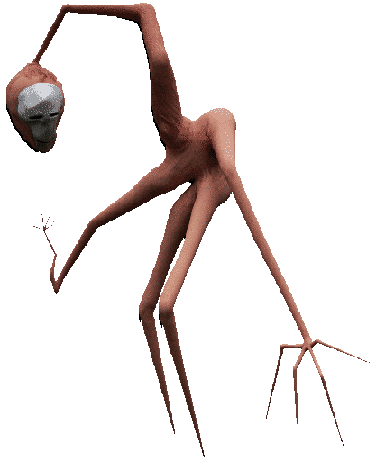
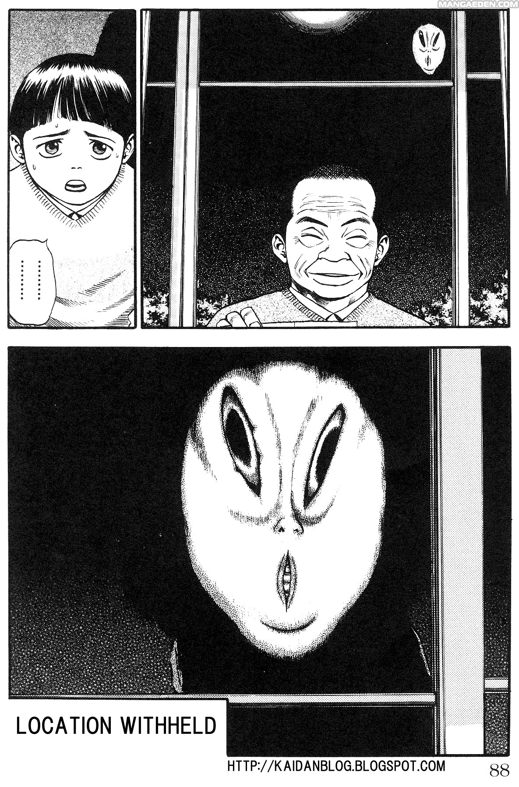
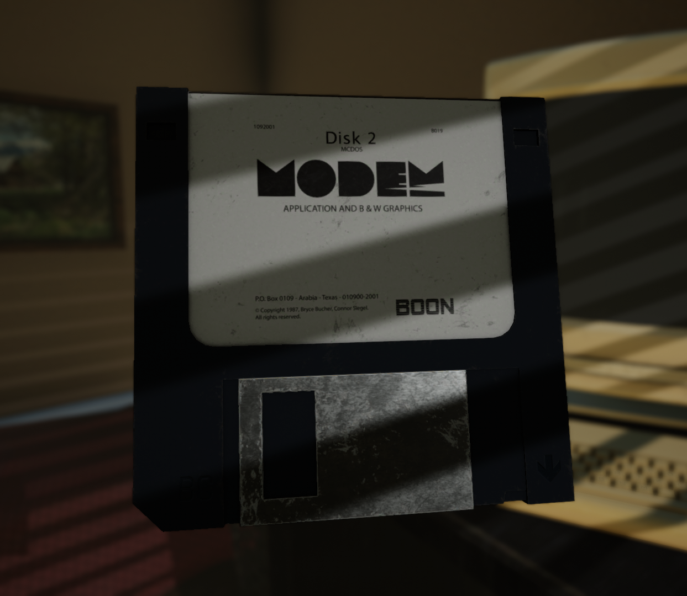

Location Withheld is a short, horror adventure game in which you find yourself in an unfamiliar office. You rumage through files and inspect objects in order to slowly uncover the mystery behind various unusual deaths.
Location Withheld is my first commercially released video game (12/13/18), and, as such, it will always have a special place in my heart. I created it while I was in highschool during a period of time where I was extremely stressed out about my future. I desperately wanted to create games for a living, and I created this game to prove to myself that I could. My goal was to get a "real game" released before graduating. I am still really proud of the atmosphere in this game, and I am glad I was able to make something I was happy with. Since it is a cheap horror game on itch.io, I immediately got a lot of feedback in the form of small youtubers letsplaying the game. That marked the first time I had ever had strangers play my game in a way that was visible to me, and it was extremely exciting at the time. I'm glad it all worked out the way that it did because it really motivated me to keep making stuff. I would have kept making games either way, but it was nice y'know. I think this game is interesting in that it's a smallscope, high-fidelity, horror-focused project which, at the time, is what I felt like I was going to be focusing on; however, I haven't really returned to making a straight-up horror game since. Maybe I'll create a VR remake someday who knows. If I do then that last line will be dated lol.
On October 22nd 2019, I released a psx-styled demake of Location Withheld. I had only just recently gotten interested in creating something with a 5th gen aesthetic, and this was essentially my second release where I did such. This was my first project that I created as a part of the Haunted PS1 community, and it was specifically created for the 2019 Horrifying Halloween Jam. I created it entirely within about 48 hours, and it came together as my first complete lowpoly game. It plays very similar to the original, but it replaces the realtime item inspection system with a pre-rendered inspection system.

FACT #1
The title of the game came from a panel from the manga series Fuan No Tane that Trevor Henderson posted on twitter.
FACT #2
There is an underlying mystery about the monster's connection to the fibbonacci sequence that I accidentally made too subtle. The dates on the police files correspond to the sequence, and if you type it into the phone you get a secret ending. I had recently read Uzumaki, and it stuck the idea in my head of natural mathematical phenomena having secret, sinister implications.


FACT #3
This floppy disk is a reference to a game called MODEM which was created by a friend and I in highschool for a competition. It was my first "real" attempt at creating a realized game in unity.
FACT #4
If you type "M-O-D-E-M" on your keyboard while ingame, the textures for the floppy disk will change to be much lower resolution. I added in this easter egg becuase I was curious what it might look like to have low-res PBR materials. This also marks the very first time I was interested in replicating an aspect of 5th generation aesthetics in my work.